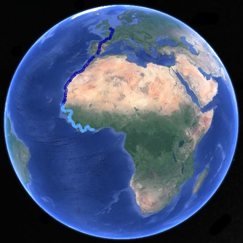
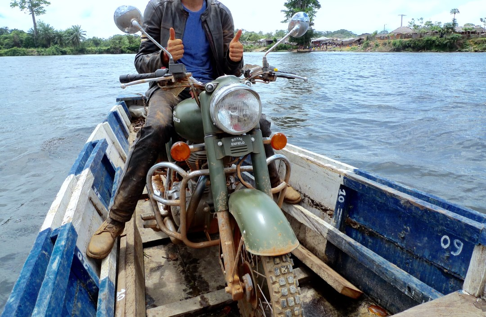

Liberia / Ivory Coast, AFRICA
Borders Without Bridges (6 minute read)
Latest intel is that I'm probably going to be shot.
With a gun...
Apparently, it’s a mess over on the other side of the border with Ivory Coast. There’s a big refugee camp here in Liberia, full of people fleeing rebels in western Ivory Coast who are going about through villages, killing people.
I didn’t know that...
I've been getting filled in by a couple of whities in my latest pitstop, Harper.
Anywhere within a hundred clicks of the border on the Liberian side is a serious no-go zone.
Apparently, I've been "very lucky" to make it this far... The whole of the day's ride to Harper I should have, on the odds, ran into one of these rebels on the road.
Didn't know that...
But, here's the rub, I'm fucked either way from here on out: There's only one road into Harper - where I've come from, full of rebels - and one road out - to Ivory Coast, which is also full of rebels... Shooting people...
If I'm going to risk it either way, I might as well risk it going forward, right?
What a shit set of options... Like someone dropping a turd in each of your hands and asking you which one's your favourite.
The whities running the refugee camp give me a serious chewing-out for my "sheer recklessness", but is it reckless if I didn't even know?
And to think, I had such a beautiful ride into Harper, pretty sure I wouldn't have enjoyed it nearly as much if I knew that, at any moment, I might have been in some fucker's gun sights...
Gives me the fucking willies just thinking about it...
I suit up and head the short ride to the border.

There's a river, and no fucking bridge...
Whatever. Just gotta go through the motions and see how this ends up. There must be a way.
Checking out of Liberia is a piece of cake. It’s a remote border and there’s no traffic. Quick and easy.
Back to the bigger problem...
I can see a couple of barges over on the other riverbank. I ask the locals at the post what the go is.
Apparently they’re going nowhere today, I’ve missed my window, and there’s no amount of money that could make them move.
So, that leaves those little boats...
There's only one "boat", a bloke floating in a carved out tree is looking at me hopefully...
Not gonna happen. I don’t have the stomach for this. Not today.
I've crossed a border on a boat just like that before, and decided, there and then, that it was going to be a "once in a lifetime experience", and I'm not going back on that...
Anyone who was at the Liberian side of the border has gathered around to see how this is going to end up. They’ll probably get some cheap entertainment out of this, and they’re coaxing me to give it a go.
No thanks.
I can see a boat on the other shore, one big enough to at least have a tiny motor on it. That’s what I want. But because no one’s moving between the borders it’s not going anywhere either.
So I wait.

My mate in the hollowed out tree isn’t doing me any favours, ferrying people back and forth and meaning that my motor boat isn’t getting the chance to fill up on the other side.
Just as I’m thinking it’s time to take my medicine and get in the canoe, the boat finally makes the crossing - I think the owner smelled some fat stacks, a big pay-day, and came across to collect.
The captain's a bit of an oddball; a little guy with only half a moustache, and I don’t mean half a mo like a Hitler style either, nor a pencil thin mo or anything like that, he’s just decided to only shave one half, so that half his face has a moustache and the other half doesn’t.
It's distracting me while I’m trying to concentrate on the haggle...
We strike a deal and load up the boat.
With many hands it's surprisingly easy to lift the bike and get it in the boat.
We gently chug across the border.
Piece of cake...
Back to French...
On the other side Half-Mo ends up sharking me on the deal by using a very favourable exchange rate.
There’s less people over this side who are keen to help lift the bike out of the boat, so it’s heavy as hell, leaving me literally dripping sweat in my leathers from the back breaking effort.
Border post. It's a handful of buildings with a village market attached to it like a parasite.
Immigration is easy. Fill out a form, get the stamp. Immigration always seems to be a breeze, never complicated, never a hassle.
Then onto customs for an Laissez-Passer ("LP", paperwork for vehicles) for the bike, which always seems to be complicated, never breezy, always a hassle.
The young official tells me that the registration plus the passport are fine for Cote d’Ivoire, no need for a Laissez-Passer, no problem.
Not again...
I make the same arguments that I made with Uncle Sam, and they're equally useless.
It's so frustrating. Why the fuck don't they just give me one, even if I don't need it. What's it to them??
I'm not giving up this time.
We go in circles.
He cracks. Tells me he’ll issue an LP for 10,000CFA.
That’s 25 bucks. That’s double the most I've ever paid. That’s rubbish.
I produce 4,000 CFA, 210 Liberian dollars and 1 US dollar. All counted, that’s about the equivalent of 6,000 CFA. He needs to meet me halfway...
Arguing ensues. I know the price is more than enough, so I stick to my guns.
He cracks
I’m pretty pleased with myself. I've become a hard-nosed sonofabitch.
He’s gets about halfway through filling out the LP, and he asks me what my mothers and fathers names are.
“What?? Porqwar? Ce pour le moto?”
He stares at me like I’m a retard. “Oh, le moto?!”
“Yeah, le moto!” Dickhead! What the fuck have we been talking about?
The silly dickhead was writing out a LP for a person - not a bike.
An LP for a person?? Is that even a thing??
Buggered if that makes any sense.
I know that he's done it intentionally, too; this guy’s not thick. Sure enough, he’s blaming me like it’s somehow my fuck-up, and the cost goes up to 15,000CFA to cover the ruined LP.
Fuck that.
This is bloody extortion.
We’re both too pigheaded to back down now.
I sit in his office for over an hour.
I'm certain I’ll wear him down. I’ll Shawshank it. Just chip away. I’ve got nowhere better to be.
I get thirsty. Then hungry.
And I crack.
Waste of an hour...
I take his initial suggestion and just leave.
Winging it, again.
Fuck it.
Just hope there's not many checkpoints.
I ride out.
Checkpoints.
Lots of checkpoints.
I don't have the nerves for this...
They're not bunting and ropes, either.
Spike strips.
Mean ones.
Oddly, it's a good thing for me. Cars can't fit through - bike's can.
By the time the cops or army realise from their roadside huts what’s going on I’m already past the strips, everytime.
I can hear the trilling of angry whistles fade away as I crack on. Bye bye!
It's a strange emotion. I'm happy they're here - it decreases my odds of getting shot - but not so happy they're here, because now I have to deal with them.
Fourth time, and I run out of luck: There’s a bloke actually doing his job - standing in the middle of the road.
He waves me over.
He’s a big fucker too, with a big fuckin' gun. No escaping this.
Please ask for the passport.
“Cart grease...”
Shit. 'Cart grease' is the noise they make in French for motorbike papers. Translates to something like 'grey card'.
I give him my bike’s rego papers.
He looks at it, with a perplexed look on his face. Not good...
“Ooo eh votre Laisser-Passez?”
Shit shit shit!
I pull over the bike and take my time taking off my helmet before my head melts. It's so hot!
Now, how to play this...
Another army goober, a skinny bloke, has made his way over and wants to see my passport.
Beautiful.
I give him my passport and we flick through the pages, talking about the journey so far, and I smoothly segue into my favourite distraction ploy: asking for directions.
It works a treat.
The two of them go into great detail of how to get to the next village, which, given there’s only one road, should have been pretty straight forward.
It’s perfectly steered the conversation; all talk of LP's forgotten.
I thank them for their crucial help, grab my papers and head off to waves and smiles. Like a goddamn magician.
I'm still on edge... This is a big country, and if four checkpoints on one road is anything to go by, there's going to be a shitload more to come.
I don't know how long my luck and bluster will last.
After a few hours of riding, still in the red zone, I pull into San Pedro, which is the oddest name for an African city I've ever come across
I haven't been shot, but I'm not out yet...